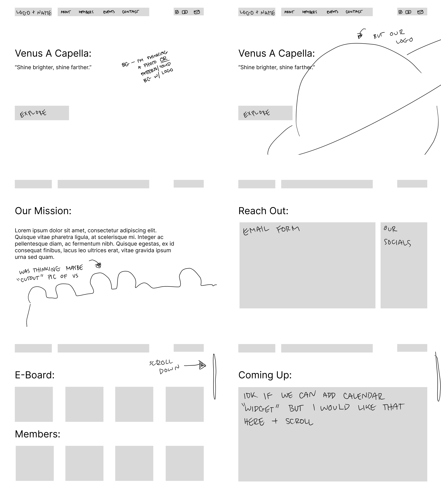

Venus A Cappella Website Design
Project Overview
A website concept created for Venus A Cappella, a competitive a cappella group at the University of Florida. The project focuses on creating a central, accessible website where visitors can learn about the organization and explore its members, events, and contact information.
My Role
I developed the website structure, page layouts, and overall visual organization. I created the mockups in Figma and used design references from Dribbble while developing the site's visual direction.
Final Design
Final website mockups created in Figma.
Design Process
I began by sketching the structure of key pages and exploring how navigation, content, imagery, and interactive elements could be organized throughout the website.
